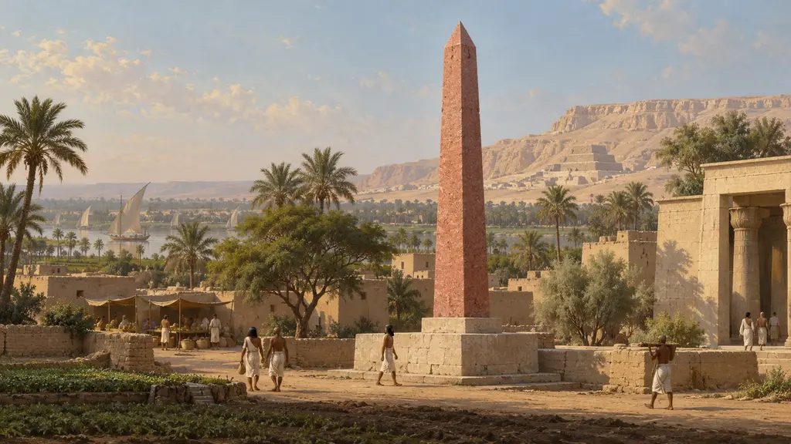
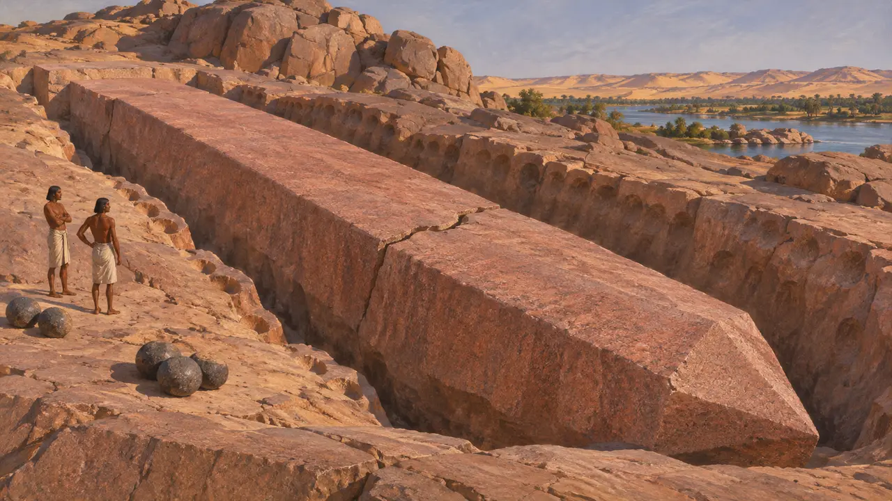
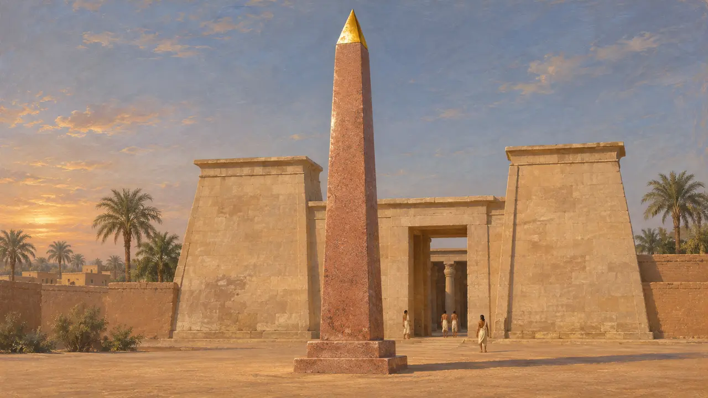
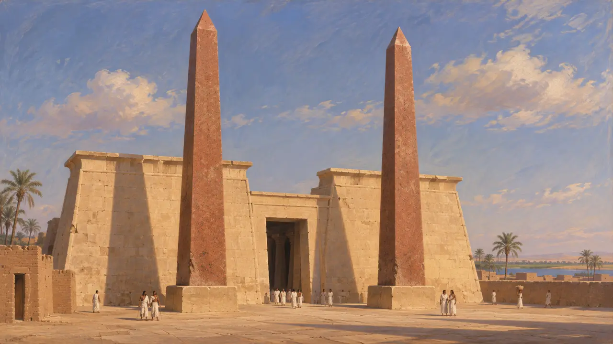
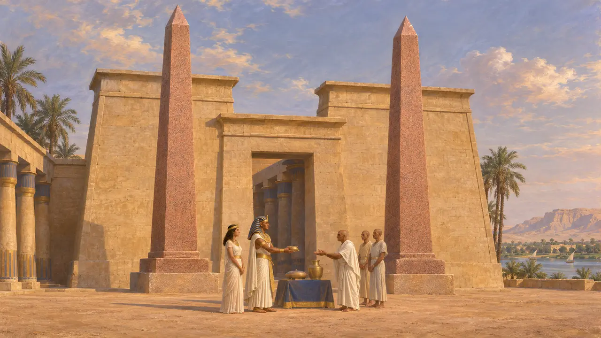
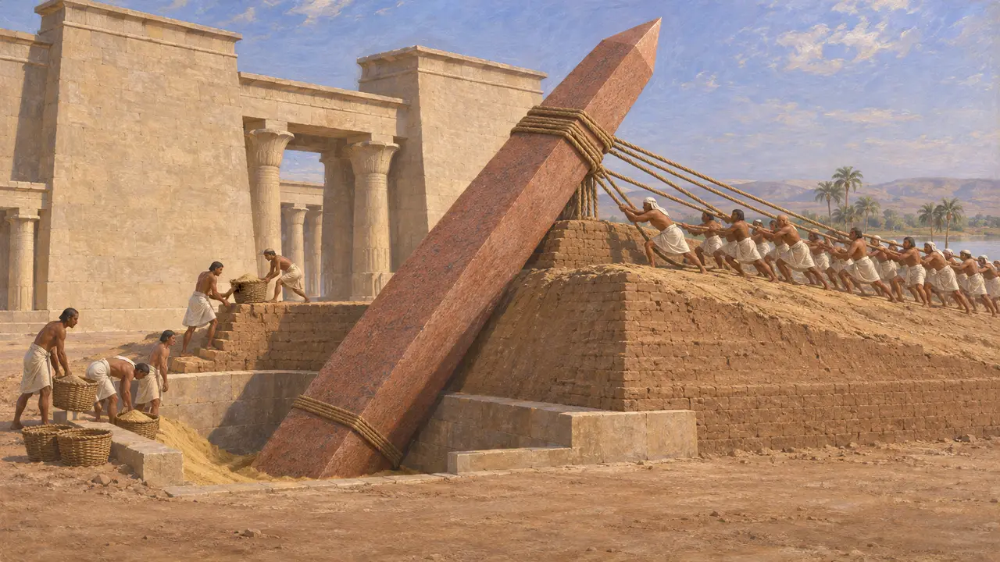

Obelisk
Monolithischer Granitschaft vor ägyptischen Tempeln; stand 525 v. Chr. bereits seit Langem
Ein Obelisk war ein hoher, vierseitiger Steinschaft, der sich nach oben verjüngte und in einer kleinen Pyramide endete. Ägyptische Könige stellten Obelisken meist paarweise vor Tempeltoren auf, als Zeichen des Sonnengottes. Zur Zeit der persischen Eroberung 525 v. Chr. standen viele schon seit Jahrhunderten, und die saitischen Könige hatten erst kurz zuvor weitere hinzugefügt. Von keinem Obelisken ist sicher bekannt, dass er für einen persischen König errichtet wurde.
Im Spiel: Das Spiel bietet den Obelisken nur in Memphis als Wohngebäude an. Seine Anmerkung beruft sich auf Herodot, doch diese Stellen beschreiben Obelisken in Heliopolis und Sais, nicht in Memphis. Die meisten Obelisken bestanden aus Assuan-Granit, wenn auch nicht alle.

Aus einem einzigen Stein gehauen
Zeitgenössisch belegtDie meisten Obelisken wurden aus dem roten Granit von Assuan am Südrand Ägyptens gehauen, einige wenige jedoch aus Quarzit oder anderem Gestein. Im Steinbruch von Assuan liegt noch heute ein unvollendeter Obelisk. Er bekam Risse, bevor man ihn aus dem Fels lösen konnte, und wurde aufgegeben. Die Arbeiter formten ihn, indem sie mit Kugeln aus hartem Dolerit auf den Granit einschlugen, und die Gräben, die sie dabei anlegten, sind rund um den Schaft noch zu sehen.
R. Engelbach, The Problem of the Obelisks, 1923

Sonnenzeichen an Tempeltoren
Zeitgenössisch belegtObelisken waren mit dem Sonnenkult von Heliopolis verbunden, und ihre Spitzen wurden mitunter mit Metall überzogen, um das Licht einzufangen. Der Obelisk Sesostris' I., um 1950 errichtet, steht dort noch heute, und Inschriften auf den Obelisken der Hatschepsut in Karnak berichten von ihrer Herstellung. Die saitischen Könige Psammetich II. und Apries stellten in den Jahrzehnten vor der persischen Eroberung Obelisken in Heliopolis und Sais auf. Beide stehen heute in Rom, wohin römische Kaiser sie später brachten.
L. Habachi, The Obelisks of Egypt, 1977

Was Herodot sah und hörte
Antiker BerichtHerodot berichtet, ein König, den er Pheros nennt, habe im Sonnentempel von Heliopolis zwei Obelisken geweiht. Jeder sei aus einem einzigen Stein gefertigt und hundert Ellen hoch gewesen, also etwa 45 bis 50 Meter. Der höchste noch stehende Obelisk, heute in Rom, misst etwa 32 Meter, sodass Herodots Angabe wohl übertrieben ist. Er beschreibt auch große steinerne Obelisken im heiligen Bezirk von Sais neben einem See.
Herodotus 2.111, 2.170

Der blinde König und die treue Gattin
Spätere LegendeHerodot erzählt, wie Pheros einen Speer in den über die Ufer tretenden Nil schleuderte und mit Blindheit geschlagen wurde. Ein Orakel verkündete, er werde geheilt, wenn er seine Augen mit dem Harn einer Frau wasche, die ihrem Mann treu sei. Bei seiner eigenen Frau blieb die Heilung aus; er ließ die Frauen verbrennen, bei denen es misslungen war, heiratete jene, die ihn heilte, und beschenkte danach die Tempel, unter anderem mit den Obelisken. Der Name Pheros ist wohl der Königstitel Pharao, den man für einen Namen hielt.
Herodotus 2.111

Wie die Schäfte aufgerichtet wurden
UmstrittenKein ägyptischer Text erklärt, wie ein Obelisk von Hunderten Tonnen Gewicht bewegt und aufgerichtet wurde. Gelehrte haben Erdrampen, Hebelarbeit und das Absenken des Schafts in eine Sandgrube vorgeschlagen, die langsam geleert wurde. Moderne Experimente haben gezeigt, dass einige dieser Methoden funktionieren können, doch welche die Ägypter tatsächlich anwandten und ob sie variierten, bleibt ungewiss.
L. Habachi, The Obelisks of Egypt, 1977
Quellen
- Herodotus 2.111
- Herodotus 2.170
- L. Habachi, The Obelisks of Egypt, 1977
- R. Engelbach, The Problem of the Obelisks, 1923
- A. B. Lloyd, Herodotus Book II, 1975-1988